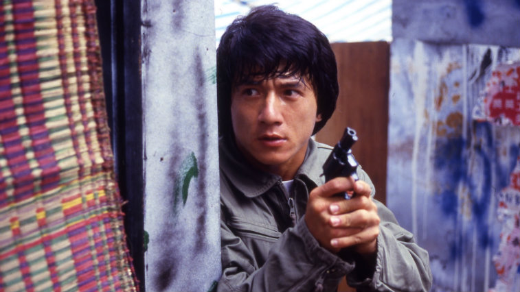

Jackie Chan
Martial artist and actor Jackie Chan's unique blend of impressive martial arts and screwball physical comedy has helped make him an international film star.

Jackie Chan in movie Police Story (1985)
A time line of Jackie Jan's life and film career:
- 1954 - Born in China, Hong-Kong
- 1961 - 1976 - Studied acrobatics, singing, martial arts, and mime—skills in China Drama Academy.
- 1976 - 1978 - The independent film producer Lo Wei, hoping to find a successor to the late Bruce Lee, cast him in a series of lacklustre kung fu movies.
- 1978 - Chan utilized his own form of bumbling physical comedy in his first successful films, Snake in the Eagle’s Shadow and Drunken Master.
- 1979 - He wrote and directed as well as starred in The Fearless Hyena.
- 1980 - Chan retained complete creative control for the Young Master, his debut with the production company Golden Harvest, which he subsequently helped transform into Hong Kong’s largest movie conglomerate.
- 1983 - He moved beyond traditional martial arts period movies to modern action-adventure films, such as Project A and Police Story, a long with their sequels.
- 1986 - His own stunts were often extraordinarily dangerous; he nearly perished from a fall in Armour of God that fractured his skull and impaired his hearing.
- 1995 - His blockbuster Rumble in the Bronx was released in the United States
- 1998 - Chan starred alongside American comedian Chris Tucker in Rush Hour, which enjoyed a great deal of success.
- 2000 - 2010 - In the United States he appeared in such films as Shanghai Noon, The Tuxedo, The Forbidden Kingdom, and The Spy Next Door. Chan starred in a remake of the 1984 action-drama The Karate Kid
- 2011 - 2016 - He did voice work in the computer-animated film Kung Fu Panda and its sequels
- 2016 - Chan became the first Chinese actor to receive an honorary Academy Award, which recognized his distinctive international career.